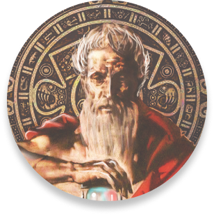

O que é?
A aba comunidade não sei oq nao sei oq la, foi criada com o proposito de unir as pessoas de PCD sei la o que mais, amor e fé, andam lado a lado a todo momento, nem sei oq eu to escrevendo.
Como participar?
A aba comunidade não sei oq nao sei oq la, foi criada com o proposito de unir as pessoas de PCD sei la o que mais, amor e fé, andam lado a lado a todo momento, nem sei oq eu to escrevendo.
Para os gregos antigos Khrónos refere-se ao tempo cronológico, ou sequencial, que pode ser medido, associado ao movimento linear das coisas terrenas, com um princípio e um fim.
Com um propósito criativo e educativo, a ars-libri criou um departamento nomeado de CHRONOS.
O usuário seleciona uma data e são listadas todas as obras de maior influência e importância daquele ano escolhido.
2023